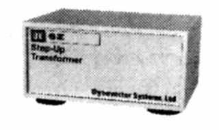

DV-6Z

■価格 14,000円■型式 MC型カートリッジ用昇圧トランス■入力インピーダンス 2〜40Ω■負荷抵抗 47kΩ ■昇圧比 20ｄＢ■周波数帯域 10-30,000Hz +0 -1dB■クロストーク■全高調波歪率 0.01%■重量 160g■寸法 W7.0×H3.8×D6.3�p■発売 1982年3月■販売終了 1989年頃■備考 価格は1979年頃のもの
バイパス不可。
ダイナベクターのインデックスヘ